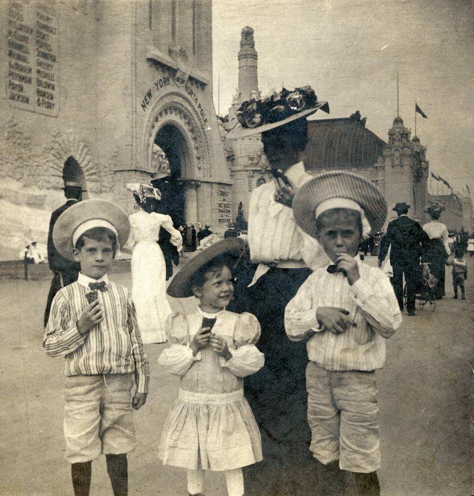

History of Ice Cream (Summary)
Ice cream has a rich history that dates back thousands of years. The earliest known recipe for ice cream comes from ancient Persia, where it was made with ice and flavored with fruits and spices. In the 18th century, ice cream became popular in Europe, and by the 19th century, it had made its way to America. Today, ice cream is enjoyed by people all over the world, with countless flavors and variations to choose from.
Interesting Facts about Ice Cream
Here are some interesting facts about ice cream:
- Ice cream is one of the most popular desserts in the world, with Americans consuming an average of 23 pounds of ice cream per person each year.
- The most popular ice cream flavor in the world is vanilla, followed closely by chocolate.
- The largest ice cream cone ever made was over 9 feet tall and weighed more than 2,400 pounds.
- In the United States, July is celebrated as National Ice Cream Month.
- Around 50% of the volume of ice cream is air, which contributes to its light and airy texture.
- The invention of the ice cream cone in 1904 was a collaborative effort between an ice cream vendor and a nearby waffle vendor at the St. Louis World's Fair.
Production of Ice Cream
The production of ice cream involves several key steps:
- Mixing: The main ingredients, including cream, sugar, and flavorings, are mixed together.
- Pasteurization: The mixture is heated to kill any harmful bacteria.
- Homogenization: The mixture is processed to create a smooth texture by breaking down fat molecules.
- Cooling: The mixture is rapidly cooled to prepare it for freezing.
- Freezing: The mixture is churned while being frozen to incorporate air and create a creamy texture.
- Hardening: The ice cream is placed in a hardening cabinet to allow it to freeze completely.
- Packaging: The ice cream is packaged into containers and stored at low temperatures until it is ready to be sold.
Full History of Ice Cream (Wikipedia)
Here is a short history of ice cream, taken from Wikipedia:
The origins of frozen desserts are obscure, although several accounts exist about their history. Some sources say the history of ice cream begins in Persia in 550 BC. A Roman cookbook dating back to the 1st century includes recipes for sweet desserts that are sprinkled with snow, and there are Persian records from the 2nd century for sweetened drinks chilled with ice. Kakigōri is a Japanese dessert made with ice and flavoured syrup. The origins of kakigōri date back to the Heian period in Japanese history, when blocks of ice saved during the colder months would be shaved and served with sweet syrup to the Japanese aristocracy during the summer. Kakigōri's origin is referred to in The Pillow Book, a book of observations written by Sei Shōnagon, who served the Imperial Court during the Heian period. The earliest known written process to artificially make ice is known not from culinary texts, but the 13th-century writings of Syrian historian Ibn Abi Usaybi'a in his book "Kitab Uyun al-anba fi tabaqat-al-atibba" (Book of Sources of Information on the Classes of Physicians) concerning medicine in which Ibn Abi Usaybi'a attributes the process to an even older author, Ibn Bakhtawayhi, of whom nothing is known. Ice cream production became easier with the discovery of the endothermic effect. Prior to this, cream could be chilled easily but not frozen. The addition of salt lowered the melting point of ice, drawing heat from the cream and allowing it to freeze."